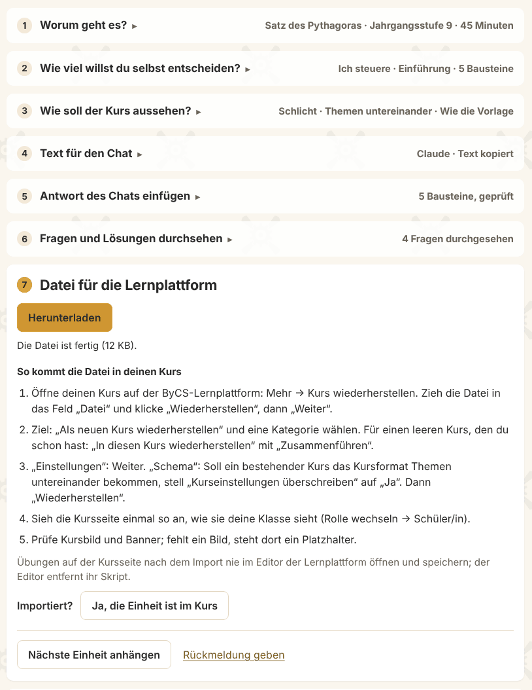

Worum geht es?
Aus deinem Thema wird eine Einheit für die ByCS-Lernplattform. Die Datei entsteht in deinem Browser.

So läuft es
- Du gibst Thema, Jahrgangsstufe und Minuten ein.
- Du kopierst den Text in deinen Chat und die Antwort zurück.
- Du lädst die Datei herunter und stellst sie im Kurs wieder her.
Eingerichtet für ByLKI, fobizz, AIS-Chat, MUCGPT, ChatGPT, Claude und Gemini. Erprobt ist der Text bisher mit ByLKI und einem Claude-Modell; wie die anderen Chats antworten, soll die Beta zeigen.
Mit Code-Agenten
Arbeitest du mit Claude Code, Codex oder einem Assistenten mit Code-Ausführung, kannst du auch den Skill aus Version 1 nehmen.